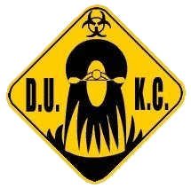

Welcome!!
Welcome to Dublin University Kayak Club. We are a vibrant, active sports club in Trinity College Dublin. We cater for both complete beginers and those who have already kayaked before. We have pool sessions twice weekly in the pool in Trinity's sports centre and we also have monthly Sunday river trips along with a monthly introduction to different disciplines of kayaking. More information about these can be found here. We don't only kayak either, we have regular nights out throughout the year as well!! To make this even better we also run several big trips throughout the year. These go all over the country and usually are for a weekend and more information about these trips can be found here.
Where we are
This map shows where the Kayak Club is located in Grand Canal Dock. If you zoom in on the map you will be able to see the entrances to Trinity's Technology and Enterprise campus at Grand Canal Dock. We are the big red container at the bottom of this marker.
New Members
Welcome new members and some older members who want to look at the useful content on this page. This Page contains some information on what you should bring to each of the sessions if you want to go to one. It will also contain information of who to contact if you have any further questions about anything that we do or incase you have any issues on any of the trips. If you have any medical conditions such as asthma or anxiety attacks please let a member of the committee know when you are signing up for a trip. This is just so the safety boaters on the trips know what is going on in the rare case that something happens.
Pool Sessions
For pool sessions you only need your normal swimming gear. Apart from this list you just need you to turn up.
- Swimming hat
- Swimwear
- Towel
- Money for a pint (Generally Thursdays)
Sunday River Trips
When going on a Sunday river trip, you need to bring some extra cloths. What to bring is listed below but please make sure anything you intend to wear on the water is NOT cotton. This will make you cold if you get wet at all. Thermals, such as fleeces and base layers, made from synthetic fabrics or wool are perfect as these will keep you warm even if they get wet.
- Old Runners....Not the ones you wear to the trip (Or the cheap ones you can get in Penny's)
- Swimwear
- Towel
- 1/2 Base layers and a fleece
- If you get cold easily bring pair of long johns (A couple of pairs of woolen tights for Girls if you don't have long johns)
- (Optional) Wetsuit
- (Optional) Any kayaking gear you wear
The Rest of the gear on this list we have but if you have your own by all means bring it.
Weekend Trips
For pool sessions you only need your normal swimming gear. Apart from this list you just need you to turn up.
- Changes of Cloths
- Everything listed under Sunday river trips
- Toiletries
- Theme appropriate fancy dress costume
Contacts
If the issue is not urgent please send an email to trinity.kayak.club@gmail.com and a member of the committee will get back to you as soon as possible. On a trip please mention any questions/complaints/issues to a committee member. This doesn't have to be in public you can pull one into a room for a minute and they will listen. If you are friends with a committee member on facebook sending them a message would also be a good quick way to get in contact with them.
Pool sessions are held in the pool in Trinity College Sports Centre on Tuesday and Thursday from 8pm to 9pm during term. These sessions are for everyone and all you need are your normal swimming togs (swimsuit) and a swimming hat. It is very nice to learn the basics in a nice warm pool or if you are more advanced we can teach you to roll and maybe some flatwater playboating moves!
White Water Kayaking is a type of kayaking where you get on a river at one point and get off some distance downstream. It is named after that frothy white water that you can see on the surface of turbulant water. The difficulty of the rivers are done in a I to VI Grading scale with Grade I being still water (swimming pool) and Grade VI being a place where some (most) people need clean shorts just looking at it. During the year we work up to Grade III which is fun but is also forgiving once there are some people around to help which is what the rescue are there for. The most important thing is that people have fun on the river!!
Surf kayaking refers to paddling in surf conditions in the sea and is a great way to learn to paddle. This involves catching waves in your boat, carving down them, and riding them into shore. This is a great discipline both for beginners learning to paddle and more advanced paddlers going big. Surf kayaking is an important part of both our Bundoran and Lahinch trips.
Also known as freestyle, or the older phrase rodeo, refers surfing river waves and holes, throwing down big moves, and generally performing aerial acrobatics in tiny boats. Playboating is both a great discipline in its own right, and also a fantastic way to develop the skills need to really push your whitewater progress. Popular spots for the club include features on the Liffey and Boyne, as well as Clifden, Tuam, and Oranmore in Galway. This is a varsities discipline and coaching is available within the club.
Canoe Polo is a sport like no other. It is like water polo except the goals are smaller and raised about 1.5m off the water which makes it a lot harder. Combine that with boats that are fast and can turn on a sixpence and you have the main components of the sport. It is a sport that can be played in all conditions but it is generally played in an indoor pool in the winter time for comfort. The games are short with each half lasting anywhere from 7 to 14 minutes depending on the competition. The games also tend to be reasonably high scoring which keeps the games exciting for those watching.
This is one of the few kayaking disciplines that is in the Olympics. Slalom kayakers race down, generally man made, courses weaving in and out of gates on the way down. The winner is the person who was the fasted through all of the gates. Touching a gate gives you a 2 second penalty which, at the top level, is nearly always insurmountable while missing a gate is a 50 second penalty. There are a number of pump controlled whitewater courses, like those seen in the Olympics, for slalom in the UK and many more in central Europe.
Sea kayaking is a new introduction to the club and refers to kayaking in longer boats around coastal waters. This is a great way to see the beautiful coastline of both Dublin Bay and further afield. These trips tend to be run in summer with destinations such as Dalkey Island, Ireland’s Eye, and Trips around Bray Head.
Sprint and marathon races take place on flat water, usually on a lake. The boat you use for both disciplines is built for speed as it is 5.2m long and is very narrow. Sprints are raced over 200m, 500m, 1000m and 5000m. You can race in a one-man, two-man or four-man canoe or kayak. Marathon races vary greatly in distance, most local races are between 10-15km, while the national and world championships race over 20 or 30km. You can race in a marathon in a one-man or two-man canoe or kayak. Some races, like the Liffey Descent have more than 5 boat classes with several age classes. Other races, like the Devizes to Westminster is mainly completed by two-man kayaks covering the 125 miles over 24 hours.
These trips happen most weekends rain or shine. As long as there are rescue available there is a trip. Every week these trips are catered towards the people that go. They are a really fun day out for very little. The only price is a small contribution towards the bus (no more than €10) or petrol for the people driving (usually about €5 but it varies slightly depending on trip length). We can go anywhere from the Boyne at Slane right the way to the Aughrim in Wicklow. Each week conditions will dictate what is possible. Some weeks we will be surfing awesome waves while others we will be running cool rivers.
The Freshers Weekend has gone to Bundoran for the last 6 years and those 6 trips have been some of the most epic ever. We leave on the Friday night and have a drink or two on the way down. When people rise on Saturday we take you to an amasing waterfall. It is about 10ft high and we can go off it in our boats or even jump in from the side. Saturday night is themed fancy dress and we all head out looking varying degrees of fabulous to the local nightclub, Paris. The Sunday morning is follow by a refreshing dip in the sea as we go kayak surfing on nearby beaches, which is a perfect way to start a morning. When we finally get home on the Sunday night everyone half asleep with a great big smile on their faces already looking forward to the next trip.
This is where we meet our rivals from UCD for the first time in mid November. It also happens to be our colours weekend. Fortunately we get on quite well with UCD and we all stay in the same hostel which leads to a load of fun. For this trip we leave on a Friday evening, same as the freshers trip, and come back on Sunday afternoon. Friday and Saturday night are spent in the Claremont nightclub (which is right outside our door!!) with Saturday night being another night of fancy dress. Colours is decided for the most part on the fancy dress because neither of us are really competitive. The kayaking we do in Lahinch is surf kayaking but we get one of the best beaches in the country pretty much to ourselves because of the the time of year.
Kerry is one of the greatest weeks known to man, literally. We rent a holiday home in Glenbeigh, County Kerry from the 27th of December to the 2nd of January. The house is there for people to come for as long or little as they want. This is the first big white water trip of the year. Generally there will be loads of both current and past members of the kayak club paddling and living very near each other. Kerry is also very popular with other clubs from colleges such as UCD, NUIG, UCC, CIT and Edinburgh Napier. Kayaking stops after the 30th of December, which is also known as peg day. This is to let the festivities build for the New Years celebrations which can often go on far into the New Year. A very common ailment to get from Kerry is Kerry sickness. This is caused by the desire to paddle the amasing waters that you just paddled in Kerry again next year.
For one weekend of the year our club gets a little more competitve than normal. We have a weekend where all the other colleges in ireland(North and South) come together to try and win overall or just have a lot of fun. We don't think it would be fair to win varsities most years as we get enough abuse for being from Trinity anyway. However, The Friday and Saturday nights of varsities are filled with laughter, scandal, banter and some paddling thrown in for good measure. Saturday is the, religously observed, fancy dress night. The winning club of fancy dress usually wins a fantastic prize the next day. The slightly funky varsities t-shirt reminds you of the excellent weekend that you had and the other clubs that you played pranks on or the walk home which with 400 paddlers in the same place is always great fun.
There is slmost no better way to end the year than a trip to Cardiff. "There are no rivers" you might say, but Cardiff has an outstanding white water center where we can rent al sorts of boats. You can fly or get the ferry, stay in the middle of Cardiff and paddle more than you ever thought was possible. All this while being in the safest possible environment to paddle. We are kayakers so we can't forget the second to Dublin nightlife that Cardiff has to offer. This trip is very flexible because the white water course is open pretty much all week. Some Friday is generally included in the trip as the white water centre is at it's very best on a Friday night.

Holding the prestigious position of club captain, Dublin native David brings with him over two years of paddling experience in the club and is again a familiar face at all the main club events and training sessions. Currently heading into his third year of his studies, David is spending his summer in British Columbia guiding rafts and paddling some of the regions renowned white-water. This, along with all his other experience means David has the necessary skills to deal with the hardships of being a club captain.

Holding the position of DUKC secretary for the second year in the row, the rather bashful Conall is not a fan of disclosing personal information. However, despite this Conall is a regular attendee of club pool sessions and club trips and is well known by all our members. Conall has a particular fondness for the discipline of Canoe Polo which he says he has played for “a good long time” and has been a member for on the clubs polo team for a number of years. While most of Conall’s secretarial work is behind the scenes, members get a taste of the effort he puts into his work by the emails he regularly sends.

Heading up the club’s accounts for the year is Tómas “Mossy” McNamara. Currently pursuing a degree in occupational therapy, Tómas has been paddling for roughly four years within and outside DUKC, largely confining his paddling activities to flatwater.

Jack joined the club two years ago and he has proved that he is always up for a some fun ever since his first trip away to Bundoran. Jack is an engineer entering his third year in college and this year is his second year in a row on the committee. Last year Jack was the Outings and Equipment officer and managed out club's fleet of boats and mountains of gear along with organising the Sunday river trips.
One of our freshers from last year, Christopher made the step up to take a position on the committee for this year. Christopher came into the club with very little kayaking experience but he came along to some of the trips and the pool sessions and gradually got better.

Cade is an international slalom paddler for Ireland. He has competed for Ireland regularly over the past number of years at underage level and has started to compete at the senior level as well. Cade only narrowly missed out (about 3 seconds away!!!) qualifying for the Rio olympics in kayak slalom. Cade has been in the club for the past two years where he has been a very positive influence. Cade is also very good at white water and flat water racing as well.

Mark has been paddling for almost 10 years, with most of it being back in his local club in Cavan. He is a solid polo and white water paddler and has competed numerous times in both disciplines for both DUKC and his home club in Cavan. Mark is an avid BESS student if there ever was one, which combined with his paddling skills means there is no equal for such a position in our club.

With over four years paddling experience and including numerous foreign expeditions to far-flung rivers such as the White Nile, Billy is arguably one of the most experienced and respected paddlers within the club. When not paddling his favourite rivers such as the Upper Liffey or pursuing his interest in steep-creeking in the Alps, Billy is a regular on club training sessions and trips. All this makes Billy more than qualified to be our president for the year.